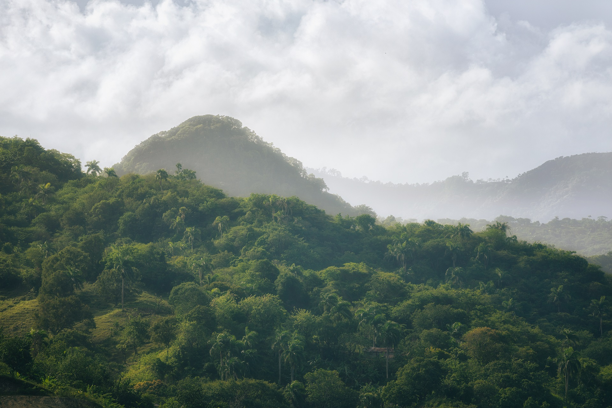
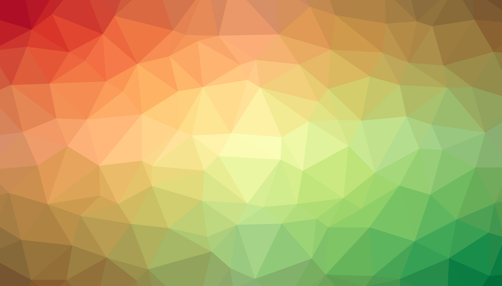

Massive Games started as a group of independent artists, writers,
and game developers looking for a shared place to create and collaborate.
In early 2013, our not-for-profit studio and collective was founded.
We're multi-disciplined with skills in multiple fields.
Our projects are run independently, but may involve multiple members working
together.
Over time, we've grown into an event and community
hub for the indie games community in the Mallee region of Australia.